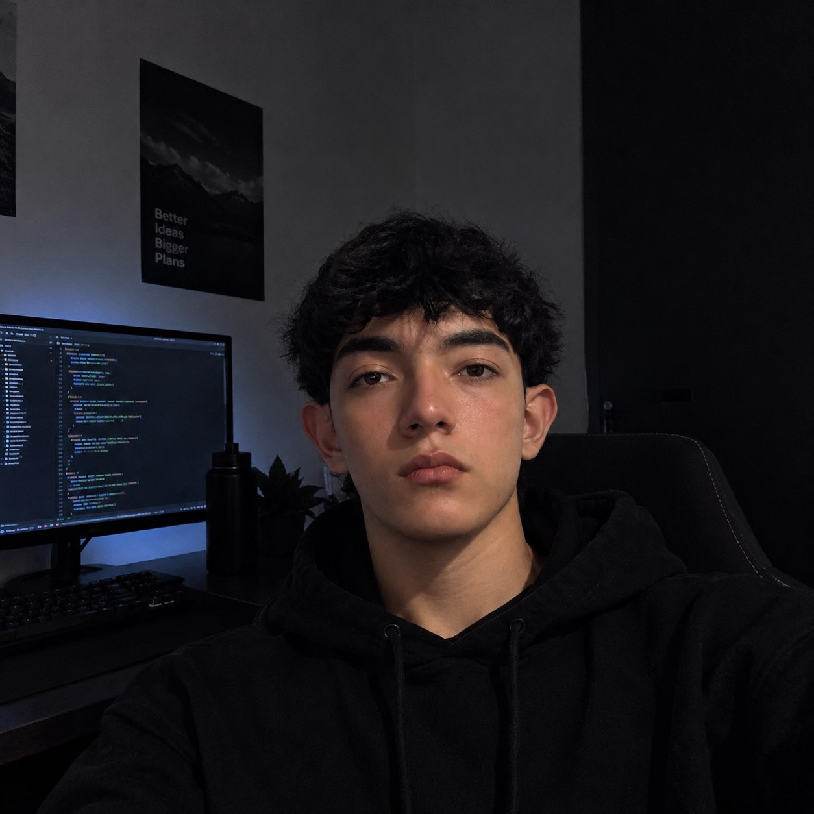

Juan Manuel Castro Rueda
Desarrollador de Software en Proceso
Apasionado por la lógica de programación, el desarrollo backend y la creación de soluciones eficientes. Me destaca la constancia, el pensamiento analítico y la rápida adaptación para resolver problemas complejos a través del código.
ContáctameFormación Académica & Técnica
- Desarrollo de Software & Algoritmos: Lógica computacional, estructuras de datos y matrices (PSeInt).
- Backend & Persistencia: Desarrollo de aplicaciones en Python con gestión de archivos y formato JSON.
- Desarrollo Web Frontend: Maquetación semántica con HTML5, CSS (Grid & Flexbox), control de versiones con Git y despliegue en GitHub Pages.
- Idiomas: Inglés técnico (comprensión y análisis de documentación).
Habilidades & Tecnologías
🎯 ¿Qué aporto a un equipo?
Mentalidad orientada a la optimización, compromiso absoluto con el aprendizaje continuo y capacidad para transformar requerimientos lógicos en código limpio y funcional.